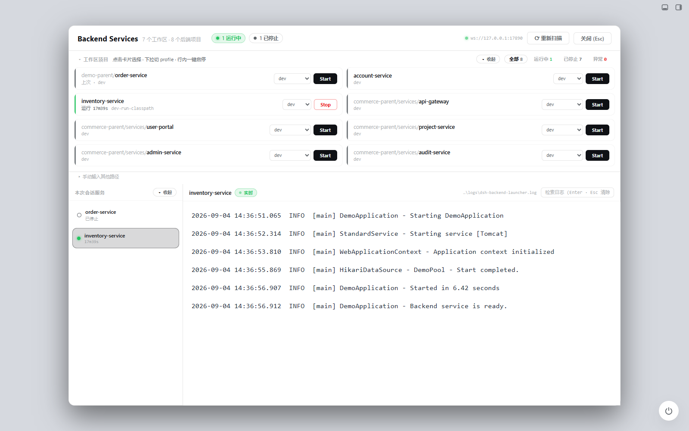

DEEPSEEK HARNESS 的开源插件
把服务启动，
留在工作流里。
不必在终端、配置文件和日志窗口之间来回切换。
在 DSH 里发现项目、选择 Profile，让 Spring Boot 跑起来。
Maven Spring Boot · Windows 已验证 · Apache-2.0
● ● ●从项目到运行，只差一次选择流程示意
01发现你的项目▱ my-spring-boot-app
识别 Maven 工程与 Spring Boot 入口
02选好运行环境dev ⌄Spring Profile
03启动，查看日志› Started Application
服务启停与日志，一处管理
DSH × SPRING BOOT你的项目，仍在本机。
专注一件事面向 Spring Boot（SpringBoot） 的本地开发体验，
不做通用服务启动器。
ALPHA · 持续迭代
01 / DISCOVER项目，不用一个个找
扫描工作区里的 Maven Spring Boot 工程与多模块应用，检查入口、JDK 和构建产物。
02 / CONFIGURE切环境，选个 Profile
识别 Spring Profile，在面板中选择运行环境。把不同工程的启动入口集中起来。
03 / RUN启动与停止，心里有数
查看插件托管服务的运行状态。根据现有产物选择启动模式，不按占用端口盲目杀进程。
04 / READ读日志，不和滚动较劲
检索、定位命中，也能开启末尾跟随。搜索、向上滚动或切换服务时，自动让出阅读位置。
不是另一个终端窗口
你的 Spring Boot 工作台。

复用 DSH 的认证通道，不额外开放独立控制端口。截图为界面示例，并非在线控制台。
QUICK START
下一次启动，
试试在 DSH 里。
已安装 DSH CLI？
在终端运行右侧命令，然后完整重启 DSH。
在插件市场查看 ↗
终端 / PowerShell
dsh plugin --profile web add github:simplifyOurLife/dsh-spring-boot-launcher
- 安装插件安装源为 GitHub。若宿主提示构建授权，请确认信任来源后按提示操作。
- 完整重启 DSHWeb 端重启 Host 服务；桌面端退出并重开应用。只刷新页面不够。
- 打开 Spring Boot 面板扫描工作区，选择工程和 Profile，再点 Start。更新插件后同样需要重启。
把边界也说清楚
专用，所以不贪多。
当前为 Alpha 阶段。支持什么、尚未验证什么，
都应该在安装之前看得见。
阅读完整兼容性说明 ↗- Windows 11 + PowerShell 7
- 已验证
- Maven + Spring Boot / 多模块
- 已验证
- DSH 桌面端
- 接口已适配，真实工程端到端待验收
- Linux / macOS
- 尚未验证
- Gradle / 其他服务类型
- 当前不支持
只运行你信任的工程。 插件通过宿主以当前用户权限执行 Maven 与 JVM，不是安全沙箱。应用日志可能包含敏感信息，分享前请脱敏。安全说明 ↗